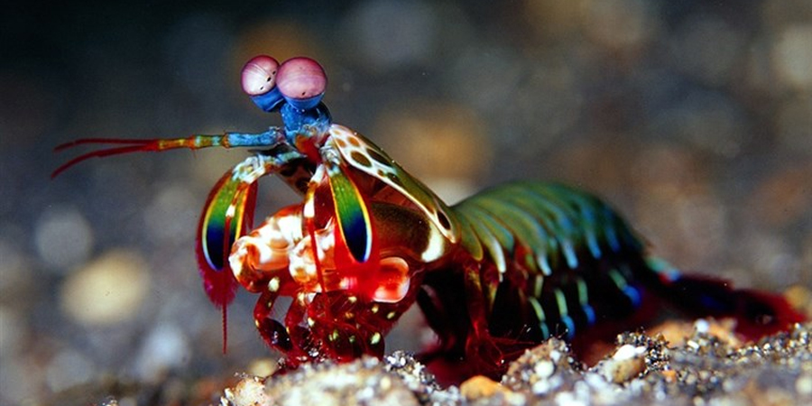

Fatos sobre o Stomatopoda
Olhar poderoso
O olho de um camarão mantis (Odontodactylus scyllarus), um animal marinho que não é um mantis nem um camarão, mas um parente próximo de caranguejos e lagostas. É um olho composto, feito de milhares de pequenas unidades que detectam a luz de forma independente. Aqueles na banda média - a faixa central que você pode ver na foto - são especiais. São eles que deixam o animal ver as cores.
| Reino | Filo | Subfilo | Classe | Subclasse | Ordem |
|---|---|---|---|---|---|
| Animalia | Arthropoda | Crustacea | Malacostraca | Hoplocarida | Stomatopoda |
Olho humano x Olho camarão mantis
A maioria das pessoas tem três tipos de células de detecção de luz, ou fotorreceptores, que são sensíveis à luz vermelha, verde e azul. Mas o camarão mantis tem de 12 a 16 fotorreceptores diferentes em sua banda média.
As proteínas

Como nós, camarões mantis enxergam cores com a ajuda de proteínas sensíveis à luz chamadas opsinas. Estes formam a base de pigmentos visuais que reagem a diferentes comprimentos de onda de luz, permitindo-nos ver cores diferentes. Se um camarão mantis tem seis receptores de UV, deve ter pelo menos seis opsinas que são sensíveis a diferentes sabores de UV.